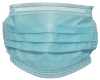

Téléchargement des données...
"Quel nom ?"
Pour 1 photo, 5 noms.
Il faut trouver le bon.
[1]
"Quelle photo ?"
Pour 1 nom, 5 photos.
Il faut trouver la bonne.
[2]
Trombi
Trombinoscope
interactif
[3]

Abandonner
Hommes
Femmes
Retour
Réinitialiser
Aucun résultat.
Version
0.000
 Téléchargement des données...
Téléchargement des données...
Téléchargement des données...
Téléchargement des données...